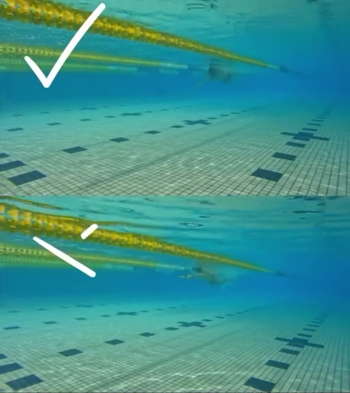
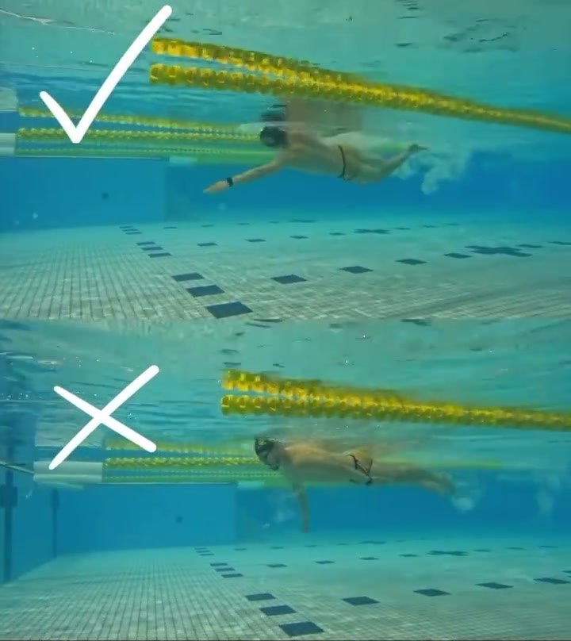
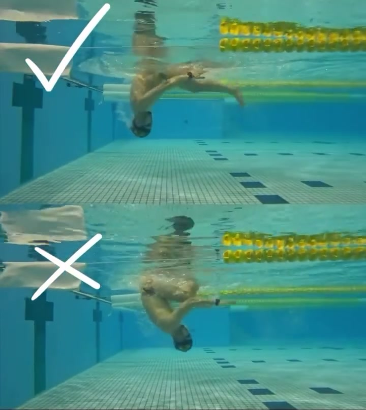
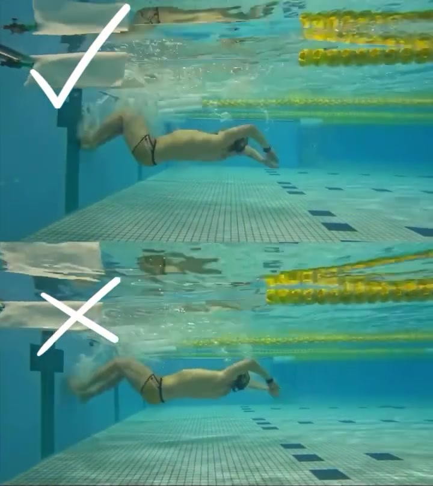
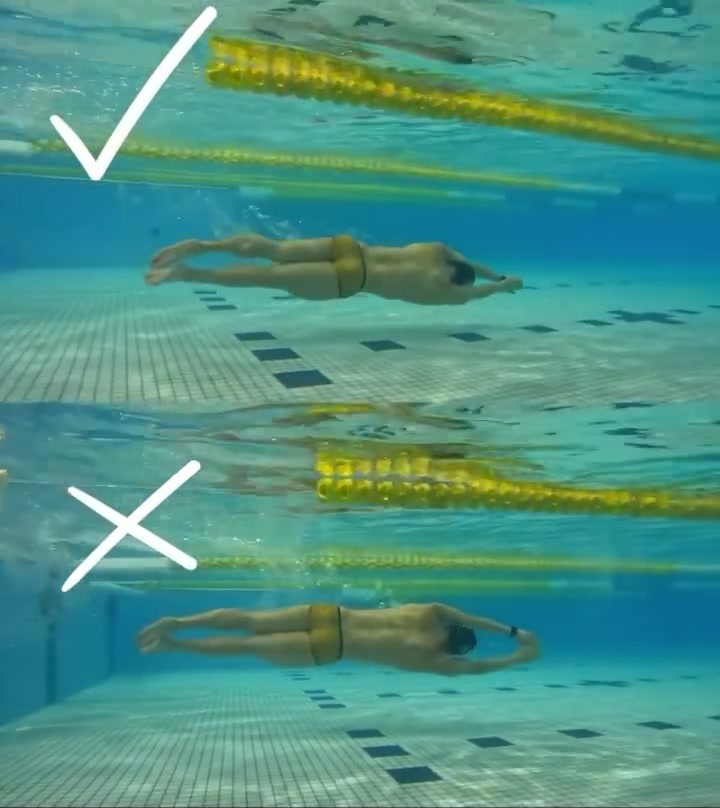
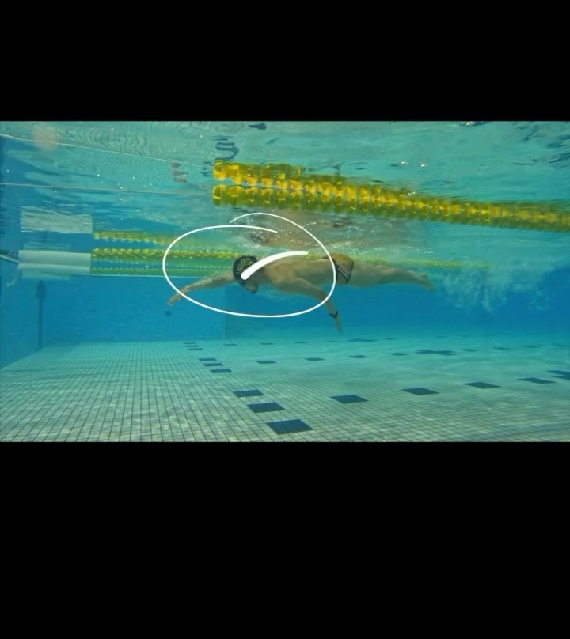
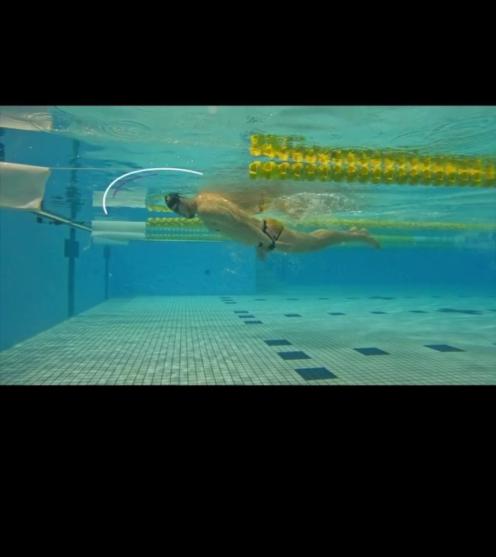
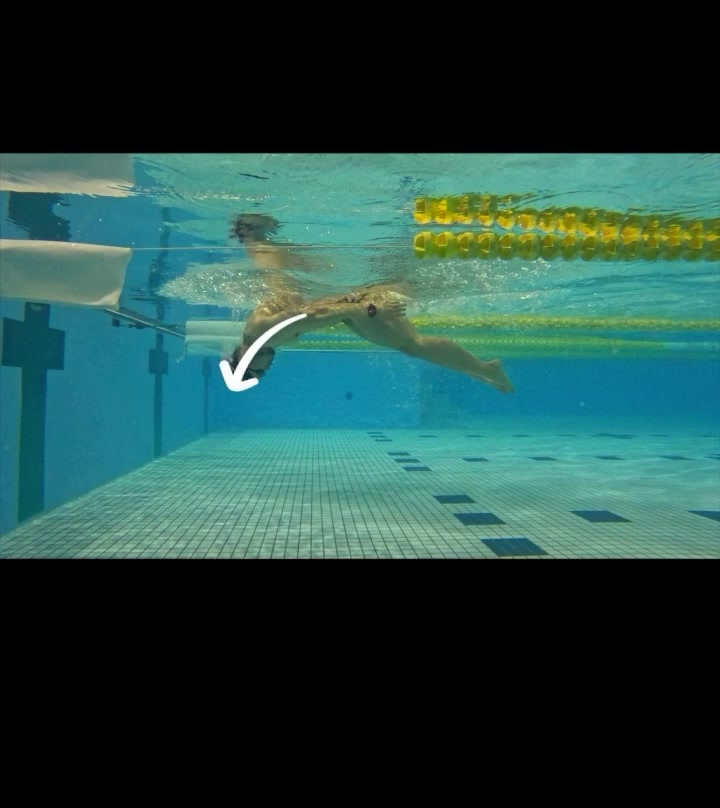

开场 · 00:00
同一泳道，两条并排画面：上✓下✗
视频从水下机位开场，画面被切成上下两格：上格左上角标着白色「✓」，下格左上角标着白色「✗」。两位泳者几乎同步出发，各自沿一条挂着黄色浮标的泳道游向镜头方向的池壁，为随后的转身对比做铺垫。整个对比段落持续到大约 00:09，此后画面切换为单人单机位的慢动作讲解。

入水前划水 · 00:04
贴近池壁前，两人的划水姿态已经能看出差异
游到距池壁还有几米时，上格（✓）泳者身形更贴近水面、手臂划水路径更靠近身体中线；下格（✗）泳者划水幅度看起来更松散、身体起伏略大。因为视频没有语音讲解，这里只呈现两人动作轨迹的可见差异，不对具体划水技术细节做超出画面的判断。

贴壁翻滚 · 00:05–00:06
触壁前的收拢翻滚，两人几乎同一时刻开始却走出不同节奏
快到池壁时，两人几乎同时开始低头、收腿、身体向前下方翻滚，准备完成自由泳的翻滚转身（tumble turn）。画面显示上格（✓）泳者的翻滚动作更紧凑、身体折叠角度更小；下格（✗）泳者的身体看起来展开幅度更大，翻滚显得更「松」。

蹬壁时机 · 00:06–00:07
这一帧是整段对比里差异最明显的时刻：谁先蹬壁离墙
在约 00:06.75 这一帧，上格（✓）泳者的双脚已经蹬离池壁、身体伸展成流线型向前冲出；下格（✗）泳者此时仍处于身体收拢、脚还未完全离开池壁的翻滚阶段。也就是说，在同一时间点上，✓ 泳者已经完成蹬壁，✗ 泳者的转身节奏明显慢了半步。

流线型滑行 · 00:07–00:08
蹬壁之后，领先的差距在滑行阶段被继续拉开
两人蹬壁离墙后都进入水下流线型滑行（双臂前伸、身体绷直），但因为上格更早完成蹬壁，画面里上格泳者的滑行位置持续领先于下格泳者一个身位左右，说明这段视频想强调的核心差异出现在「转身节奏」而不是「滑行姿势本身」——两人滑行姿势看起来都基本合格，差距主要来自蹬壁时机早晚。

单画面慢动作分解 · 00:09–00:20
分屏对比结束后，镜头切到单人慢动作，用箭头标出转身弧线
大约 00:09 起，画面从上下分屏切换为单一水下机位的慢动作，只跟拍一位泳者完整重复一次转身动作。视频先后在 00:11 和 00:15 两处叠加了白色圆弧箭头，箭头方向从泳者头部/肩部划过一个逆时针的弧线，用来标出翻滚转身时身体绕环的旋转路径，帮助观众看清「转身到底往哪个方向翻」。


蹬壁发力箭头 · 00:21
翻滚之后，一个向下弯的箭头标出蹬壁发力的方向
翻滚动作接近完成、双脚即将触壁时，画面在泳者腿部下方叠加了一个向下弯曲的白色箭头，指向池壁方向，用来提示蹬壁时的发力方向——即双脚蹬向池壁、身体借力向前弹出，这与前面分屏段落里「上格更早完成蹬壁」的差异形成呼应：慢动作在这里进一步把「蹬壁」这个单一动作单独拆出来强调。

笔记文案给出的背景信息
笔记文案只有一句话：「深圳学游泳日常训练！」，配合话题标签 #深圳游泳艾教练# 和 #深圳学游泳#。文案没有进一步说明具体是哪一类转身错误（例如具体是蹬壁太晚、翻滚不够紧凑，还是两者都有），这些差异均为通过分屏画面直接观察得到，而非视频文字或语音明确指出。